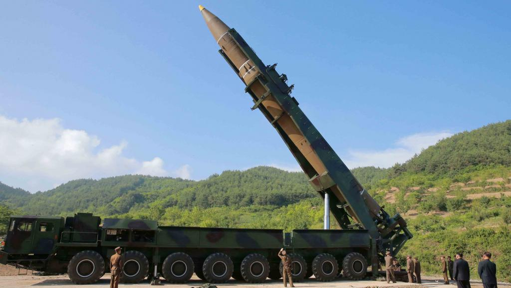

法航客机曾途经朝鲜导弹测试区
文章来源:http://news.mingjingnews.com/2017/08/blog-post_95.html
发稿日期:2017/8/2

朝鲜官方展示的导弹运载及移动发射车。(REUTERS)
（法广RFI）朝鲜上周五晚再度试射洲际弹道导弹，引起国际社会关注及多国予以谴责。美国广播公司新闻网周二报道，
当天导弹坠入日本专属经济水域前不足10分钟，一架法国航空波音777民航客机正途经该区域。
朝鲜官方传媒指，“火星14型”以高角度发射、飞行高度最高3725公里，47分钟12秒后落入998公里以外朝鲜半岛以东、日本北海道对开的日本专属经济区海域。
根据飞行数据，导弹坠入有关水域前，法国航空编号293的航班正在北海道以西飞行。客机由日本东京飞往法国巴黎，当时机上载有323人。
法国航空公司回应报道时指，导弹测试区并不影响法航客机飞行路线，该班法国293号航机亦未遇到任何特别情况。
然而，美国国防部则对事件表示关注，发言人戴维斯重申，朝鲜导弹的轨道干扰民航客机使用的繁忙空域。
美国在试射导弹前，通常会发新闻稿，但朝鲜试射导弹却没有预先发出警告。